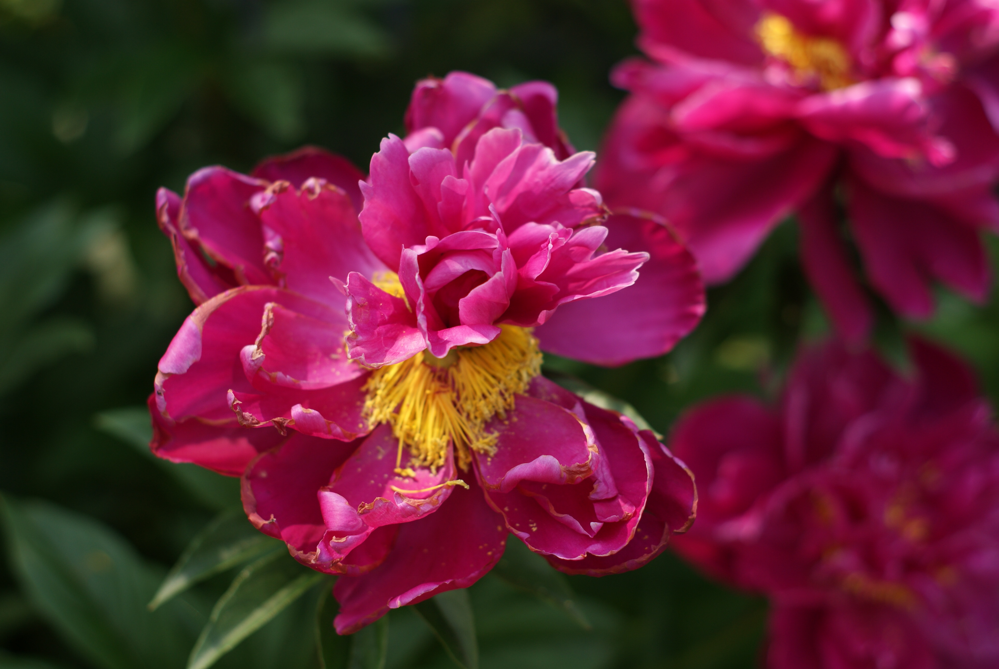

Hello. This is a very simple pc building guide. Here's a list of what you need.
Just search it up on the internet. EZ.
Accessories don't matter for dull boring people. But if you're the type looking to download ram, you should also consider adding lots of RGB to your build. There are several performance boosts you can attain from it. They vary by the color: